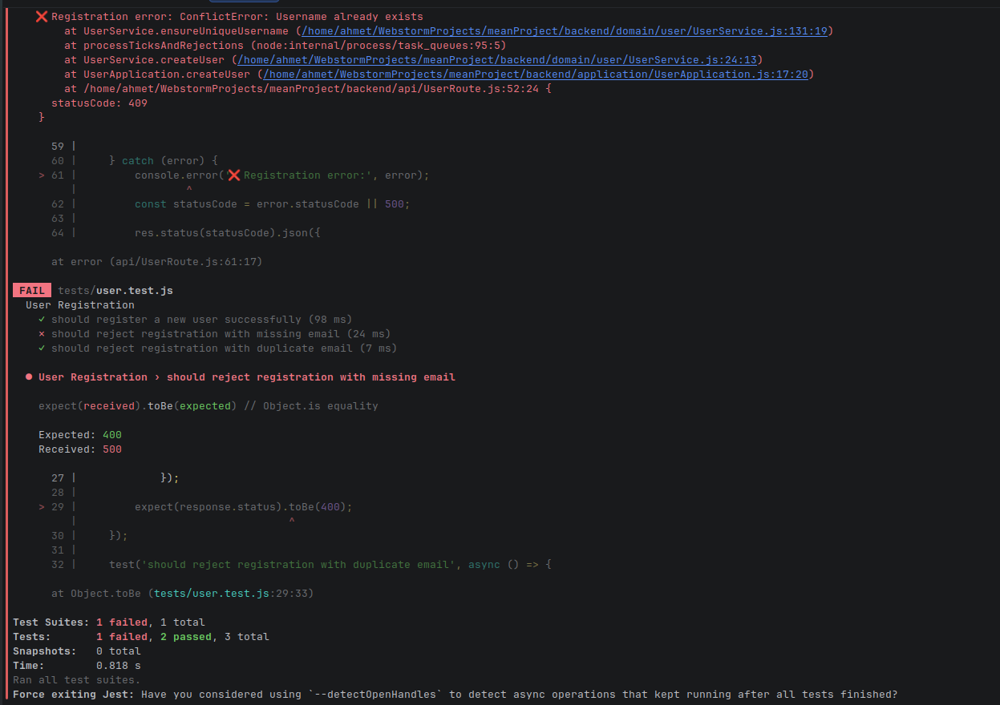
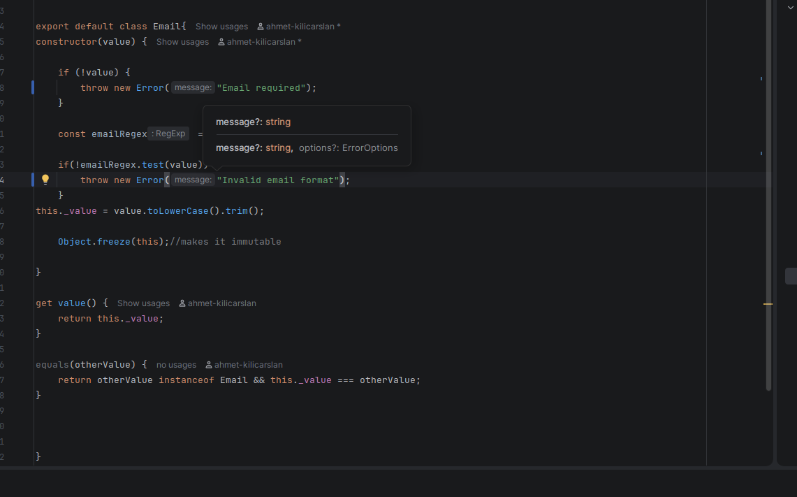
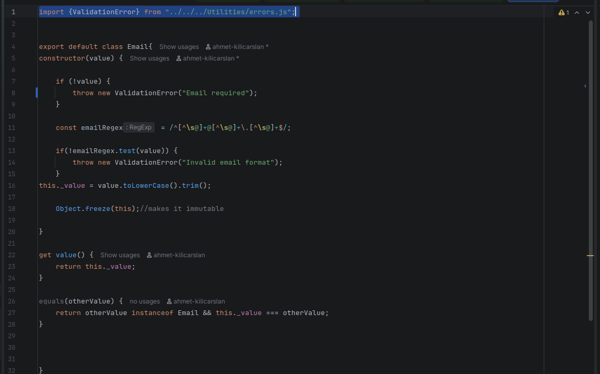

Prime Stack Defect Report
Course: Software Validation, Verification and Security Testing
Application under test: Frost Inventory and Shopping System
Team: Prime Stack
Environment: Local backend http://localhost:3000, frontend http://localhost:4200
Report date: 14 May 2026
1. Defect Summary
This report records the actual defects confirmed from the project test work, route review, security test design, and ZAP evidence. DEF-001 is marked fixed because the current defect list states it has already been corrected.
| ID | Title | Severity | Priority | Status | Related evidence |
|---|---|---|---|---|---|
| DEF-001 | Missing fields return 500 instead of 400 | Medium | High | Fixed | TC-FUNC-002, DEF DOC before/after images |
| DEF-002 | Template literal bug in getPurchaseByUserId | Medium | High | Open | Purchase route/test review |
| DEF-003 | SupplierRoute POST has no error handling | Medium | Medium | Open | Supplier route review |
| DEF-004 | Purchase create fails when userId is passed from test | High | High | Open | TC-FUNC-030 |
| DEF-005 | Login route hardcodes status 500 | Medium | High | Open | TC-FUNC-010 to TC-FUNC-012 |
| DEF-006 | Mass assignment allows any user to register as admin | Critical | Critical | Open | ST-005 |
| DEF-007 | /User/users exposes all user data without authentication | High | High | Open | ST-007, route review |
| DEF-008 | XSS payload stored in database without sanitization | Medium | High | Open | ST-003 |
| DEF-009 | Missing security headers | Low | Medium | Open | ZAP scan, 14 May 2026 |
2. Detailed Defects
DEF-001: Missing Fields Return 500 Instead of 400
| Field | Value |
|---|---|
| Severity | Medium |
| Priority | High |
| Status | Fixed |
| Source | Functional test / provided def.docx evidence |
| Related test | TC-FUNC-002 |
| Endpoint | POST /User/register |
Description: When a required registration field such as email was missing, the API returned 500 Internal Server Error. This incorrectly classified a client validation problem as a server failure.
Steps to reproduce:
- Send
POST /User/register. - Omit the
emailfield from the request body. - Inspect the response status code.
Expected result: 400 Bad Request with a clear validation message.
Actual result before fix: 500 Internal Server Error.
Current result: Fixed. The endpoint now returns the expected validation response.
Evidence: Images extracted from /home/ahmet/Desktop/def.docx are stored under docs/testing/evidence/def-doc/word/media/.



DEF-002: Template Literal Bug in getPurchaseByUserId
| Field | Value |
|---|---|
| Severity | Medium |
| Priority | High |
| Status | Open |
| Source | Purchase service/repository review |
| Related area | Purchase history |
Description: The purchase retrieval logic contains a template literal issue in getPurchaseByUserId. When the query is constructed incorrectly, the method can fail or produce an invalid SQL/order expression.
Steps to reproduce:
- Start the backend.
- Request purchase history using
GET /Purchase/byUserId/:userId. - Use both
order=ascandorder=desc.
Expected result: The endpoint returns the selected user's purchases in the requested order.
Actual result: The method can fail because the query string is not built correctly.
Suggested fix: Correct the template literal syntax in the purchase repository/service and keep the order value allow-listed to asc or desc.
DEF-003: SupplierRoute POST Has No Error Handling
| Field | Value |
|---|---|
| Severity | Medium |
| Priority | Medium |
| Status | Open |
| Source | Route review |
| Endpoint | POST /Supplier/ |
| Related tests | TC-FUNC-023, TC-FUNC-024 |
Description: The supplier creation route directly awaits supplierApplication.createSupplier(req.body) and returns the result without a try/catch. If supplier validation or duplicate checks throw an error, Express may return an uncontrolled server error instead of a clear API response.
Steps to reproduce:
- Send
POST /Supplier/with invalid or duplicate supplier data. - Observe whether the API returns a controlled error response.
Expected result: Invalid supplier input should return a controlled 400 or 409 response.
Actual result: The route has no local error handling and can return an unstructured error.
Suggested fix: Wrap supplier creation in try/catch, map duplicate supplier errors to 409, validation errors to 400, and unexpected errors to 500.
DEF-004: Purchase Create Fails When userId Is Passed From Test
| Field | Value |
|---|---|
| Severity | High |
| Priority | High |
| Status | Open |
| Source | Functional test |
| Related test | TC-FUNC-030 |
| Endpoint | POST /Purchase/create |
Description: The purchase creation flow fails when userId is supplied from the test setup. This blocks automated verification of the normal purchase workflow.
Steps to reproduce:
- Select an existing user id and product id from the database.
- Send
POST /Purchase/createwithuserId,totalAmount, and aproductsarray. - Observe the response.
Expected result: Status 201, with a purchase object and purchased-product records returned.
Actual result: Purchase creation fails for the test-provided userId.
Suggested fix: Validate the exact request shape expected by PurchaseApplication.createPurchase, confirm user id foreign-key compatibility, and add clear route-level validation before inserting purchase records.
DEF-005: Login Route Hardcodes Status 500
| Field | Value |
|---|---|
| Severity | Medium |
| Priority | High |
| Status | Open |
| Source | Functional tests / route review |
| Related tests | TC-FUNC-010, TC-FUNC-011, TC-FUNC-012 |
| Endpoint | POST /User/login |
Description: The login route returns 500 for failed login cases. Wrong passwords, unknown users, and missing credentials are expected client/authentication failures, not internal server errors.
Steps to reproduce:
- Send
POST /User/loginwith a wrong password. - Send
POST /User/loginwith an unknown username. - Send
POST /User/loginwith an empty body.
Expected result: 401 Unauthorized for invalid credentials and 400 Bad Request for missing credentials.
Actual result: The route hardcodes or maps these cases to 500.
Suggested fix: Return status codes based on error type: 400 for missing input, 401 for invalid credentials, and 500 only for unexpected server failures.
DEF-006: Mass Assignment Allows Any User to Register as Admin
| Field | Value |
|---|---|
| Severity | Critical |
| Priority | Critical |
| Status | Open |
| Source | Security test design |
| Related test | ST-005 |
| Endpoint | POST /User/register |
Description: A user can include privileged fields such as role: "admin" in the registration payload. If the backend accepts that field, any unauthenticated user can create an administrator account.
Steps to reproduce:
- Send
POST /User/register. - Include a normal username, email, password, and
"role": "admin"in the body. - Inspect the created user's role.
Expected result: The backend ignores client-provided role values and assigns a safe default role.
Actual result: The mass assignment test indicates that admin role assignment is possible.
Suggested fix: Use an explicit allow-list of registration fields. Do not accept role, id, or other privileged fields from public registration requests.
DEF-007: /User/users Exposes All User Data Without Authentication
| Field | Value |
|---|---|
| Severity | High |
| Priority | High |
| Status | Open |
| Source | Security test design / route review |
| Related test | ST-007 |
| Endpoint | GET /User/users |
Description: The user list route is publicly reachable without authentication or admin authorization. This can expose user records and supports account enumeration.
Steps to reproduce:
- Start the backend.
- Do not log in.
- Send
GET /User/users.
Expected result: 401 Unauthorized for unauthenticated requests and 403 Forbidden for authenticated non-admin users.
Actual result: Route review shows the endpoint calls userApplication.getAllUsers() without requireAuth or an admin guard.
Suggested fix: Add authentication middleware and an admin-role check to /User/users. Return only safe user fields.
DEF-008: XSS Payload Stored in Database Without Sanitization
| Field | Value |
|---|---|
| Severity | Medium |
| Priority | High |
| Status | Open |
| Source | Security test design |
| Related test | ST-003 |
| Endpoint | POST /User/register |
Description: The application accepts an XSS payload in user-controlled input and stores it in the database. If that value is rendered later without escaping, it may execute script in a user's browser.
Steps to reproduce:
- Send
POST /User/register. - Use
<script>alert("xss")</script>as the username. - Check whether the value is rejected, sanitized, or stored unchanged.
Expected result: The payload is rejected or safely encoded before storage/display.
Actual result: The XSS payload is stored without sanitization.
Suggested fix: Validate username characters, reject HTML/script tags, and rely on frontend output encoding when displaying user-controlled values.
DEF-009: Missing Security Headers
| Field | Value |
|---|---|
| Severity | Low |
| Priority | Medium |
| Status | Open |
| Source | ZAP scan |
| Tool | ZAP by Checkmarx 2.17.0 |
| Scan date | 14 May 2026 |
| Related alerts | CSP no-fallback directives, missing X-Content-Type-Options, X-Powered-By: Express |
Description: ZAP identified missing or weak security headers on backend responses. These are hardening issues rather than direct exploit proof, but they reduce browser-side protections and reveal server implementation details.
Evidence from ZAP:
| Header issue | Risk | Evidence |
|---|---|---|
| CSP missing no-fallback directives | Medium | Content-Security-Policy: default-src 'none' without frame-ancestors and form-action |
X-Content-Type-Options missing | Low | /Product/ response does not include nosniff |
X-Powered-By exposed | Low | Response contains X-Powered-By: Express |
Steps to reproduce:
- Run ZAP automated scan against
http://localhost:3000/Product/. - Review passive alerts.
- Inspect headers on
/Product/and missing routes such as/robots.txt.
Expected result: Security headers are present and technology disclosure is suppressed.
Actual result: ZAP reports missing security headers and Express disclosure.
Suggested fix: Add centralized Express security middleware. At minimum, disable x-powered-by, add X-Content-Type-Options: nosniff, and configure CSP explicitly.
3. Recommended Fix Order
- Fix DEF-006 immediately because public admin registration is a critical privilege escalation.
- Fix DEF-007 by protecting
/User/userswith authentication and admin authorization. - Fix DEF-004 so the main purchase workflow can be tested reliably.
- Fix DEF-005 and DEF-003 to improve API error handling and test clarity.
- Fix DEF-002 to stabilize purchase history.
- Fix DEF-008 by validating/sanitizing user input.
- Fix DEF-009 with centralized security headers.
- Keep DEF-001 marked fixed and retain its before/after evidence for the final report.